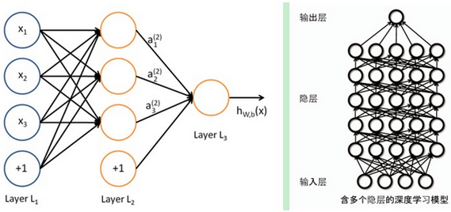

五、 深度学习（DL）基本思想
假设有一个n层的系统，S1、S2、…、Sn，它的输入式I，输出是O，形象地表示为I=>S1=>S2=>…=>Sn=>O。根据信息处理不等式，信息在经过处理之后不可能没有损失，所以I≠O。
假设有一堆I，我们通过调整系统中的参数，使得它的输出仍然是输入I，那么我们就可以自动地获取得到输入I的一系列层次特征，即S1、…、Sn。对于DL来说，其思想就是堆叠多个层，也就是说这一层的输出作为下一层的输入。通过这种方式，就可以实现对输入信息进行分级表达了。
上述假设太严格，我们可以略微地放松这个限制，比如只要使得输入与输出的差别尽可能地小即可，这个放松会导致另外一类不同的DL方法。
六、 浅层学习和深度学习
1. 浅层学习
反向传播算法、支持向量机、Boosting、最大熵方法（LR）。
这些模型的结构基本上可以看成带有一层隐层节点（SVM、Boosting）或没有隐层节点（LR）。这些模型在理论分析和应用中都获得了巨大的成功，但由于分析难度大，训练方法需要很多经验和技巧，这个时期浅层人工神经网络反而相对沉寂。
2. 深度学习
2006年Geoffrey Hinton的一篇文章的观点：
a. 多隐层的人工神经网络具有优异的特征学习能力，学习得到的特征对数据有更本质的刻画，从而有利于可视化或分类
b. 深度神经网络在训练上的难度，可以通过“逐层初始化”（layer-wise pre-training）来有效克服，在这篇文章中，逐层初始化是通过无监督学习实现的
DL的实质，是通过构建具有多隐层的机器学习模型和海量的训练数据，来学习更有用的特征，从而最终提升分类或预测的准确性。
七、 深度学习与神经网络（NW）
深度学习本身算是机器学习的一个分支，简单可以理解为神经网络的发展。神经网络曾经是机器学习一个很火热的方向，但后来慢慢淡出了（在淡出的时期是SVM和boosting的天下），原因有二：
a. 比较容易过拟合，参数比较难调，需要不少经验技巧
b. 训练速度比较慢，在层次比较少（≤3）的情况下效果并不比其他方法更优
DL采用了和神经网络相似的分层结构，只有相邻层之间有连接。为了克服神经网络训练中的问题，DL采用了与NW很不同的训练机制。

a. 传统NW中，采用的是back propagation的方式进行，简单来讲就是采用迭代的算法来训练整个网络，随机设定初值，计算当前网络的输出，然后根据当前输出和label之间的差去改变前面各层的参数，直到收敛（整体是一个梯度下降法）。
b. 而DL整体上是一个layer-wise的训练机制。这样做的原因是因为，如果采用backpropagation的机制，对于一个deep network（7层以上），残差传播到最前面的层已经变得太小，出现所谓的gradientdiffusion（梯度扩散）。
八、 深度学习训练过程
1. 传统NW的训练方法为什么不能用在深度神经网络
a. 梯度越来越稀疏：从顶层越往下，误差校正信号越来越小
b. 收敛到局部最小值：尤其是从远离最优区域开始的时候（随机值初始化会导致这种情况的发生）
c. 一般，我们只能用有标签的数据来训练：但大部分的数据是没标签的，而大脑可以从没有标签的数据中学习
2. DL的训练过程
(1) 问题：若所有层同时训练，时间复杂度太高；若每次训练一层，偏差就会逐层传递，出现欠拟合。
(2) 解决：2006年hinton提出的在非监督数据上建立多层神经网络的一个有效方法：①一次训练一层网络。②调优（wake-sleep算法），使原始表示x向上生成的高级表示r和该高级表示r向下生成的x’尽可能一致。
将除最顶层的其它层间的权重变为双向的，这样最顶层仍然是一个单层神经网络，而其它层则变为了图模型。由顶向下输出，向上的权重用于“认知”，向下的权重用于“生成”。
(3) wake-sleep算法：
a. 醒阶段：认知过程。通过外界的特征和向上的权重（认知权重）产生每一层的抽象表示（结点状态），并且使用梯度下降修改层间的下行权重（生成权重）。也就是“如果现实跟我想象的不一样，改变我的权重使得我想象的东西就是这样的”。
b. 睡阶段：生成过程。通过顶层表示（醒时学得的概念）和向下权重，生成底层的状态，同时修改层间向上的权重。也就是“如果梦中的景象不是我脑中的相应概念（我之前想象的东西），改变我的认知权重使得这种景象在我看来就是这个概念”。
(4) 训练的具体过程
1) 使用自下上升非监督学习（就是从底层开始，一层一层地往顶层训练。（feature learning））
具体的，先用无标定数据训练第一层，训练时先学习第一层的参数（这一层可以看作是得到一个使得输出和输入差别最小的三层神经网络的隐层），由于模型capacity的限制以及稀疏性约束，使得得到的模型能够学习到数据本身的结构，从而得到比输入更具有表示能力的特征；在学习得到第n-1层后，将n-1层的输出作为第n层的输入，训练第n层，由此分别得到各层的参数。
2) 自顶向下的监督学习（就是通过带标签的数据去训练，误差自顶向下传输，对网络进行微调）
基于第一步得到的各层参数进一步fine-tune整个多层模型的参数，这一步是一个有监督训练过程；第一步类似神经网络的随机初始化初值过程，由于DL的第一步不是随机初始化，而是通过学习输入数据的结构得到的，因而这个初值更接近全局最优，从而能够取得更好的效果；所以deep learning效果好很大程度上归功于第一步的feature learning过程。